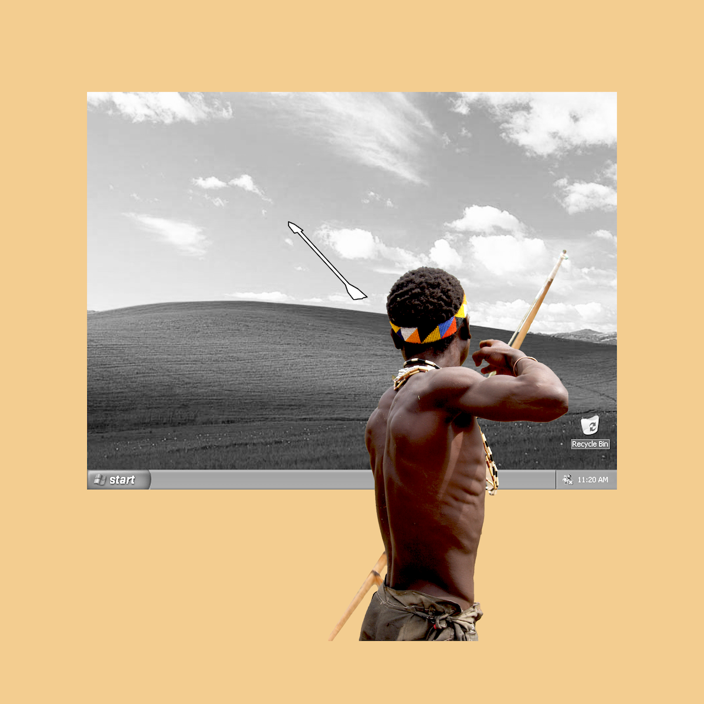

Rethinking Computer

99% of the evolution happened during hunter-gathering times. Evolution designed our bodies to have a movement-heavy lifestyle to stay healthy. However, we are having less and less movements in these screen-heavy days. As designers, we strive to to make life more convenient by inventing tools. Convenience implies less movements. What if computers are designed in consideration of the movements that our bodies need?
This is a one-semester long project speculative project that I explored the topic "a computer that encourages body movements" by creating a series of works.
Working prototype (final project):
This is a one-semester long project speculative project that I explored the topic "a computer that encourages body movements" by creating a series of works.
Working prototype (final project):
Do a spinal twist to press the enter key.

Full arm movements to scroll down the mouse.


Move the leg and stretch the ankles and feet when typing.


Stand up to quit a program.


Concept demo (midterm project):